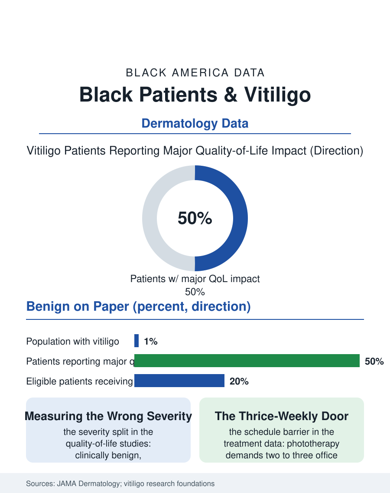

Black Public Health
Written in Contrast: Black Patients and Vitiligo
Vitiligo is clinically benign and psychologically heavy, heaviest on the deepest skin, while its treatments ration by schedule and specialty access. The vitiligo file.

Vitiligo, the autoimmune loss of skin pigment, affects roughly one in a hundred people worldwide, and in Black skin its patches are written in the highest contrast the human palette offers, which makes the condition's burden in Black patients a study in the difference between a disease's clinical severity and its lived severity. The dermatology file records both: a medically benign condition whose patients carry measurable psychological weight, and a treatment system slow to reach them. This article reads the vitiligo file.
The Same Disease, a Different Visibility
The mechanism is the immune system's destruction of melanocytes, producing depigmented patches that favor the face, hands, and joints, symmetric and conspicuous. On fair skin the patches announce themselves mainly in summer contrast; on deep skin they are visible across a room in every season, and the quality-of-life studies quantify what the mirror explains: vitiligo patients report depression, social anxiety, and self-consciousness at rates comparable to conditions medicine classifies as severe, with the burden tracking visibility, which is to say, tracking skin depth, which is to say, tracking race within the same diagnosis. The cultural layers multiply the weight in specific communities: in parts of the African diaspora, visible skin difference carries folk interpretations, contagion fears and spiritual readings among them, that patients cite in the qualitative research as governing their disclosure decisions, their marriage prospects as they perceive them, and their willingness to be photographed, a modern metric of social participation the dermatology literature has begun, rightly, to count as an outcome. Children with vitiligo meet the schoolyard's version of the same arithmetic, and the pediatric data link early visible difference to the bullying and withdrawal columns of the child health file.
Treatment's Uneven Arrival
The treatment cabinet, historically thin, has filled recently: topical immune modulators, a targeted cream approved in the last few years as the first therapy indicated for repigmentation, phototherapy with narrowband ultraviolet, and surgical techniques for stable disease. The file's disparities run through the cabinet's doors. Phototherapy requires twice or thrice weekly office visits for months, a schedule that rations by job flexibility and geography, and the dermatology access data show Black patients reaching dermatologists later in this condition as in the hair loss file, sometimes after years of being told, accurately and inadequately, that the condition is only cosmetic, a classification insurance systems use to deny the therapies whose costs then sort the treated by income. The camouflage economy, medical-grade cover makeup color-matched to deep skin, is part of the real treatment file, and its own history, the decades when the shade ranges stopped well short of the patients who needed them most, is a miniature of the beauty industry's record in the business pages. Depigmentation therapy for extensive disease, the permanent lightening of remaining pigment that a famous entertainer's case made globally famous, stands at the file's far end as the option whose existence measures the condition's psychological stakes: patients choosing to change all of their skin rather than live in two tones.
The Specialty's Education
Vitiligo is where dermatology's representation problem becomes unusually legible, because the condition cannot even be photographed properly without skill in imaging deep skin, and the teaching atlases' historical underrepresentation of dark skin in clinical images, documented in the medical education literature, means generations of physicians learned this condition's appearance on skin unlike the patients in whom it is most visible. The correction is underway in the record: image libraries being rebuilt, the skin-of-color curricula expanding, and patient advocacy, in which Black patients and their organizations are prominent, funding research and pressing the specialty on access to the new therapies. The research pipeline's most promising direction, the targeted immune therapies that halt melanocyte destruction, raises the file's recurring question in its newest form: whether the trial populations and the launch pricing will deliver the advance to the patients whose visibility makes the condition heaviest, or whether vitiligo will repeat the pattern of the cabinet's older contents. The vitiligo file closes on a patch of skin, a few centimeters of the body's surface, carrying a weight that the clinical chart records as benign. The file's whole argument is that the chart is measuring the wrong severity, that medicine's own quality-of-life instruments, when it bothers to use them, record the truth plainly, and that a condition whose burden is visibility will always fall hardest on the most visible people in the room, which in America is a dermatological way of stating this atlas's thesis.
More in Black Public Health
Hypertension Among Black Adults: Prevalence, Control, and Consequences
About 55 percent of Black adults have hypertension — the highest rate of any U.S. group. Prevalence, onset, control, and the stroke, heart, and kidney consequences in the data.
Diabetes Among Black Adults: Prevalence and Complications
Nearly one in five Black adults has diabetes, diagnosed or undiagnosed — and its complications fall with particular weight. The CDC data on prevalence, control, and outcomes.
Black Life Expectancy: The Gap at Birth and Its Causes
Black life expectancy at birth is about 73 years, roughly five years below the national figure — the summary measure of every health gap in this section. The CDC data.
Source: JAMA Dermatology and British Journal of Dermatology vitiligo studies; National Vitiligo Foundation data; dermatology access research.